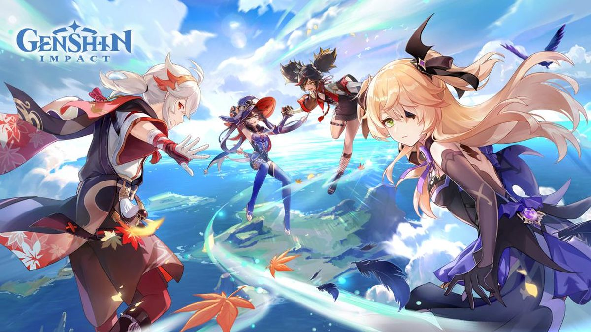
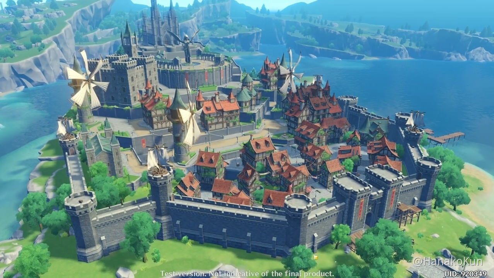
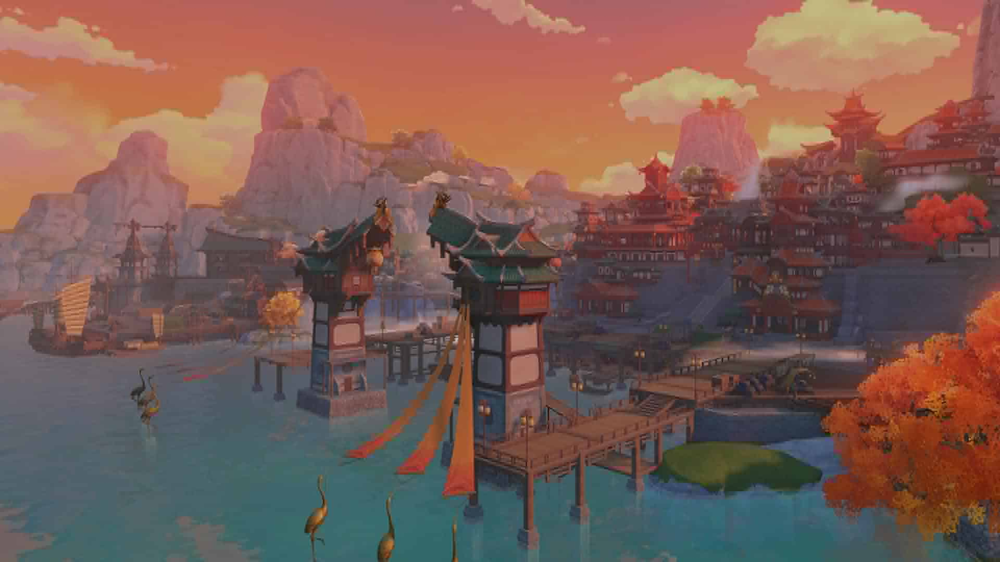
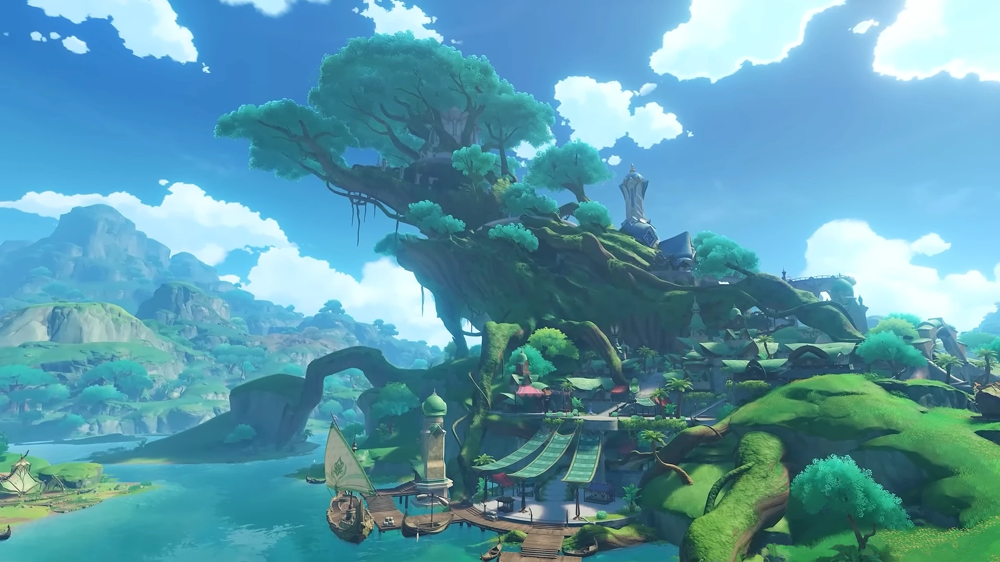
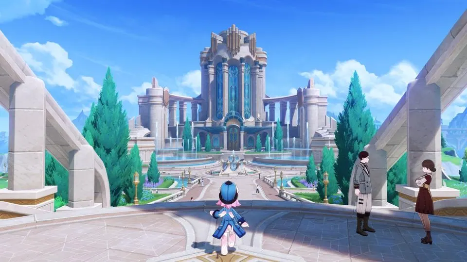
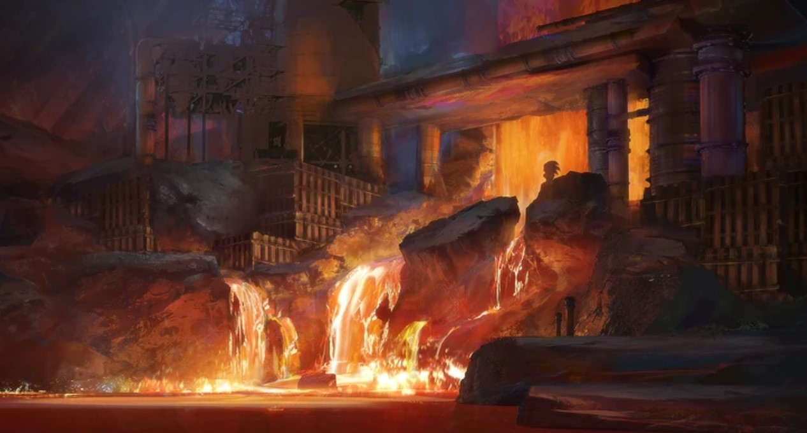

Genshin Impact
Genshin Impact adalah sebuah permainan video aksi peran daring (RPG) yang dikembangkan dan diterbitkan oleh miHoYo, sebuah perusahaan pengembang permainan video asal Tiongkok. Permainan ini pertama kali dirilis pada tahun 2020 dan telah tersedia di berbagai platform, termasuk Microsoft Windows, PlayStation 4, PlayStation 5, iOS, Android, dan juga PlayStation dan Windows.
Genshin Impact adalah permainan dunia terbuka yang sangat terkenal karena grafisnya yang indah, gameplay yang mendalam, dan cerita yang menarik. Permainan ini menggabungkan elemen-elemen RPG dengan elemen-elemen aksi dalam pertarungan real-time. Pemain mengambil peran sebagai "Traveler" yang mencari saudara laki-lakinya yang hilang dalam petualangan yang mengarah ke dunia fantasi yang penuh dengan berbagai karakter, lokasi, dan petualangan.

Salah satu aspek paling menonjol dari Genshin Impact adalah penggunaan "Elemen" dalam pertarungan dan teka-teki. Setiap karakter dalam permainan memiliki elemen tertentu (seperti api, air, angin, dll.), dan pemain harus menggunakan elemen-elemen ini dengan bijak untuk mengalahkan musuh dan menyelesaikan teka-teki dalam dunia permainan. Masing-masing elemen ini juga mewakili sebuah negara yang terdapat di dunia Genshin Impact atau Teyvat ini, yang diantaranya adalah sebagai berikut.
Mondstat
Mondstadt adalah salah satu dari tujuh wilayah (region) yang ada dalam permainan video Genshin Impact. Genshin Impact adalah permainan aksi peran daring (RPG) dunia terbuka yang dikembangkan oleh miHoYo. Mondstadt adalah salah satu wilayah pertama yang dapat dijelajahi oleh pemain setelah melewati wilayah pembukaan, dan ini merupakan salah satu wilayah utama dalam permainan ini.
Mondstadt adalah wilayah yang terinspirasi oleh gaya Eropa abad pertengahan dan dihuni oleh berbagai bangsa dan ras yang berbeda. Wilayah ini terkenal dengan arsitektur yang indah, kota yang megah, dan lanskap yang luas. Di Mondstadt, pemain akan menemukan berbagai karakter, misi, dan teka-teki untuk diselesaikan, serta musuh-musuh yang harus dihadapi dalam pertarungan.

Setiap wilayah dalam Genshin Impact memiliki elemen atau keunikan tertentu. Mondstadt dikenal karena elemen Angin (Anemo), yang mendominasi wilayah ini. Salah satu karakter utama dalam cerita Genshin Impact, yaitu Venti (juga dikenal sebagai Barbatos), adalah dewa Angin Mondstadt.
Mondstadt juga memiliki kota utama bernama Mondstadt City, yang menjadi pusat kegiatan dan cerita dalam wilayah ini. Kota ini memiliki banyak toko, karakter, dan quest yang dapat dieksplorasi oleh pemain.
Mondstadt adalah salah satu dari beberapa wilayah dalam Genshin Impact, dan pemain dapat menjelajahi berbagai wilayah lainnya dalam permainan saat cerita berlanjut. Setiap wilayah memiliki ciri khasnya sendiri, menghadirkan pengalaman unik dalam permainan ini.
Liyue
Liyue adalah salah satu dari tujuh wilayah (region) dalam permainan video Genshin Impact yang dikembangkan oleh miHoYo. Genshin Impact adalah permainan aksi peran daring (RPG) dunia terbuka yang populer. Liyue adalah salah satu wilayah besar dan beragam dalam permainan ini.
Liyue adalah wilayah yang terinspirasi oleh budaya Tiongkok dan memiliki nuansa alam yang berbeda dari wilayah Mondstadt. Wilayah ini terkenal dengan lanskapnya yang indah, pegunungan, dan lembah yang luas. Di Liyue, pemain akan menemukan kota-kota dan desa-desa yang penuh dengan karakter, kisah, dan quest yang dapat dijelajahi.

Wilayah Liyue memiliki elemen Geo yang mendominasi. Elemen Geo berhubungan dengan unsur bumi dan batu. Salah satu karakter Geo utama dalam cerita Genshin Impact adalah Zhongli, yang memiliki hubungan kuat dengan Liyue.
Liyue juga memiliki kota utama yang disebut "Liyue Harbor." Kota ini adalah pusat perdagangan dan kegiatan di wilayah Liyue. Seperti Mondstadt, Liyue Harbor memiliki banyak toko, karakter, dan quest yang dapat diakses oleh pemain.
Setiap wilayah dalam Genshin Impact memiliki cerita, budaya, karakter, dan elemen uniknya sendiri, yang menambah kedalaman dan variasi permainan. Liyue adalah salah satu wilayah yang dapat dijelajahi oleh pemain saat mereka menjalani petualangan dalam permainan ini.
Inazuma
Inazuma adalah salah satu wilayah (region) dalam permainan video Genshin Impact yang dikembangkan oleh miHoYo. Genshin Impact adalah permainan aksi peran daring (RPG) dunia terbuka yang terkenal dengan beragam wilayah yang dapat dijelajahi, dan Inazuma adalah salah satu wilayah terbaru yang diperkenalkan dalam permainan.
Inazuma adalah wilayah yang terinspirasi oleh budaya Jepang dan memiliki karakteristik geografis dan budaya yang berbeda dari wilayah-wilayah sebelumnya dalam permainan. Wilayah ini terkenal dengan lanskapnya yang indah, termasuk pulau-pulau, pegunungan, dan daerah hutan. Inazuma juga memiliki arsitektur dan desain yang mencerminkan budaya Jepang.

Elemen utama yang mendominasi wilayah Inazuma adalah Elektro. Elemen Elektro berkaitan dengan petir dan listrik. Wilayah Inazuma dikuasai oleh eleman ini dan pemain akan menemui karakter-karakter dan musuh-musuh dengan elemen Elektro yang kuat.
Inazuma juga memiliki kota utama yang disebut "Inazuma City," yang merupakan pusat dari wilayah ini. Kota ini memiliki berbagai quest, karakter, dan cerita yang berkaitan dengan cerita utama permainan.
Wilayah Inazuma diperkenalkan dalam pembaruan besar Genshin Impact, sehingga pemain dapat menjelajahi wilayah ini saat mereka melanjutkan cerita permainan. Pengenalan wilayah-wilayah baru seperti Inazuma secara berkala adalah salah satu aspek yang membuat Genshin Impact tetap menarik bagi pemain yang terus menjalani petualangan dalam dunia permainan ini.
sumeru
Sumeru pada Genshin Impact adalah salah satu dari tujuh negara di Teyvat yang akan dirilis pada tanggal 24 Agustus 2022. Sumeru adalah negara yang mengikuti Dewa Kebijaksanaan, Kusanali, Wilayah ini memiliki tema dan desain yang terinspirasi dari budaya SWANA (Southwest Asia and North Africa). Sumeru juga merupakan region terbesar pada game Genshin Impact, dengan lingkungan yang beragam seperti padang pasir yang luas dan hutan yang lebat. Sumeru dikenal sebagai rumah bagi para pelajar dan peneliti, dengan banyak perguruan tinggi dan perpustakaan yang menjadi pusat pengetahuan dan kebijaksanaan. Negara ini juga merupakan rumah bagi bangsa elemen Dendro, yang terkait dengan kehidupan, pertumbuhan, dan kebijaksanaan.

Sumeru pada masa lalu memiliki tiga penguasa yang memerintah secara bersamaan, namun setelah peristiwa tertentu, negara ini sekarang diperintah oleh Dewa Kebijaksanaan atau Dendro Archon. Selain penguasa utama, Sumeru juga memiliki Lesser Lord yang bertanggung jawab atas wilayah-wilayah kecil di negara ini. Update 3.1 memperkenalkan area padang pasir yang luas di Sumeru, di mana cerita dan petualangan di Sumeru akan berlanjut di sana. Secara visual, wilayah Sumeru mengambil banyak referensi dari wilayah SWANA, dengan desain bangunan, kostum, dan lanskap wilayah ini mencerminkan keindahan dan kekayaan budaya SWANA
Fontain
Wilayah Fontaine pada Genshin Impact adalah salah satu dari tujuh region yang ada di Teyvat. Fontaine dianggap sebagai pusat budaya dan seni yang unggul di antara negara-negara lain di Teyvat. Wilayah ini memiliki keindahan dan kekayaan budaya yang khas. Fontaine mengadopsi budaya Prancis dalam desain dan tema wilayahnya, terlihat dari arsitektur bangunan, kostum karakter, dan elemen budaya lainnya.

Fontaine dikenal sebagai pusat seni, budaya, dan teknologi, dengan beragam institusi seni, museum, dan pusat penelitian yang menarik minat para pelancong. Wilayah ini juga memiliki keindahan alam yang menakjubkan, seperti taman-taman yang indah, danau yang jernih, dan pegunungan yang megah. Fontaine dipimpin oleh Focalors, salah satu Dewa Archon di Teyvat, yang memiliki kekuasaan atas elemen Hydro dan memainkan peran penting dalam menjaga ketertiban dan keseimbangan di wilayah ini. Dengan pengaruh budaya Prancis dan fokus pada seni, budaya, dan teknologi.
Natlan
Wilayah Natlan pada Genshin Impact adalah salah satu dari tujuh region yang ada di Teyvat. Negara ini memuja Murata, God of War atau Pyro Archon. Wilayah ini memiliki banyak rintangan yang harus diatasi oleh pemain dalam menjelajahi wilayah ini. Setiap karakter pada Genshin Impact menguasai satu dari tujuh elemen yang terdapat pada permainan, dan elemen tersebut dapat digunakan untuk melewati rintangan tertentu yang terdapat pada dunia permainan.

Natlan juga memiliki banyak bahan masakan yang dapat diolah menjadi makanan yang memberikan beragam efek seperti pemulihan HP (darah), peningkatan ATK (serangan), peningkatan stamina, dan DEF (pertahanan). Wilayah ini juga memiliki banyak fakta menarik, seperti keunikan dari wilayah-wilayah lain di Genshin Impact, dan kekayaan seni dan budaya yang dimilikinya.
Snezhnaya
Wilayah Snezhnaya pada Genshin Impact adalah salah satu dari tujuh region yang ada di Teyvat. Wilayah ini merupakan negara yang dipimpin oleh Tsaritsa, salah satu dari tujuh Dewa Archon di Teyvat. Snezhnaya dikenal sebagai negara yang kuat secara militer dan memiliki kebijakan yang ketat dalam menjaga keamanan wilayahnya. Wilayah ini memiliki iklim yang dingin dan bersalju sepanjang tahun, dengan pemandangan yang indah seperti pegunungan yang megah dan danau yang membeku. Snezhnaya juga memiliki banyak rintangan yang harus diatasi oleh pemain dalam menjelajahi wilayah ini.
Snezhnaya juga memiliki kekayaan seni dan budaya yang dimilikinya. Wilayah ini memiliki banyak festival seni, pertunjukan musik, dan pameran seni yang menampilkan kekayaan seni dan budaya wilayah ini. Snezhnaya juga memiliki banyak bahan masakan yang dapat diolah menjadi makanan yang memberikan beragam efek seperti pemulihan HP (darah), peningkatan ATK (serangan), peningkatan stamina, dan DEF (pertahanan)